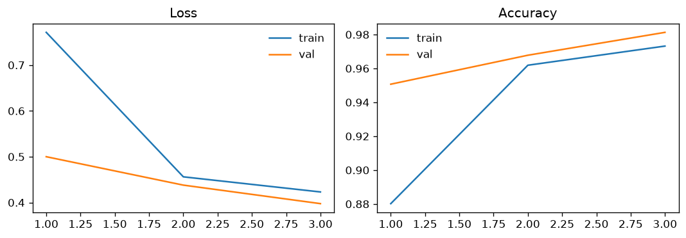
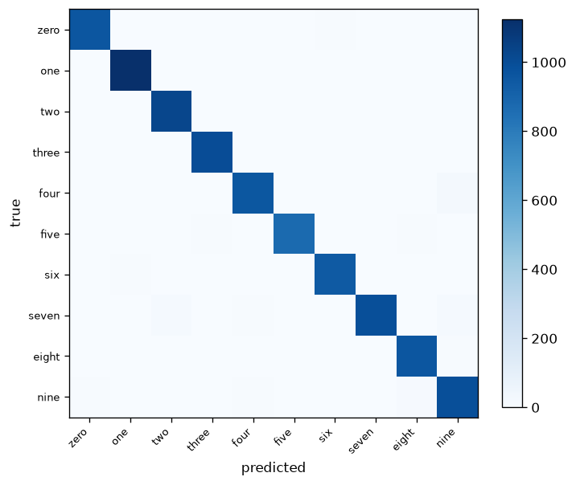
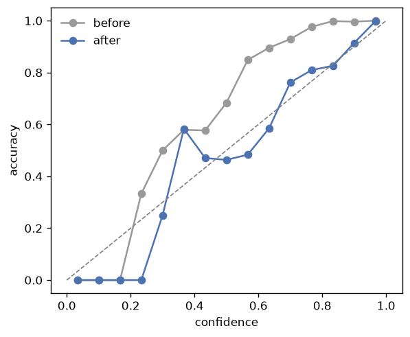
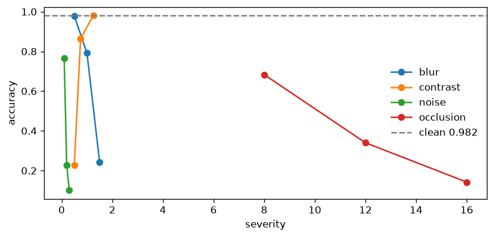
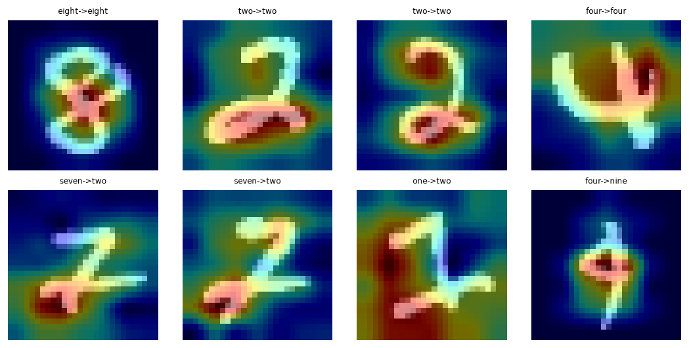

MNIST CNN
A compact convolutional classifier with temperature-scaling calibration, Grad-CAM and a corruption sweep. Trained on CPU in 265 seconds.
Test accuracy
98.22%
Macro F1
0.982
Parameters
94,186
ECE
0.0657 → 0.0040
At ≥90% confidence
99.74% 94.6% coverage
Training


Calibration and robustness


Grad-CAM

Per-class F1
| Digit | zero | one | two | three | four | five | six | seven | eight | nine |
|---|---|---|---|---|---|---|---|---|---|---|
| F1 | 0.985 | 0.991 | 0.983 | 0.987 | 0.977 | 0.986 | 0.985 | 0.980 | 0.980 | 0.967 |
Reproduce
python run.py all downloads MNIST (~11 MB), trains 3 epochs, writes the figures and refreshes the dashboard feed.